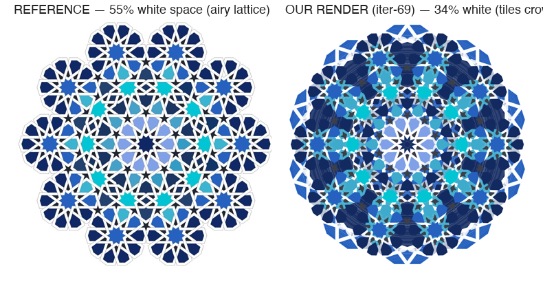
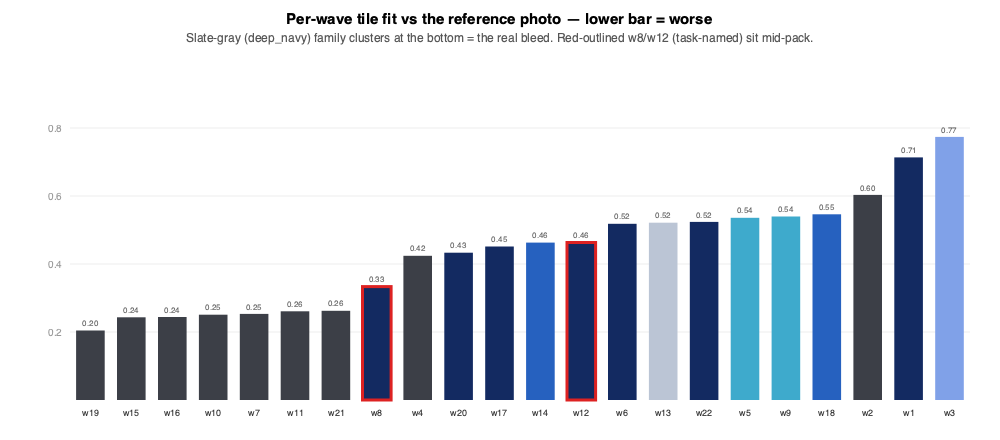

One decision. How far should the next iteration go in fixing the white-lattice gap? · 2026-06-21 · source: docs/issues/2026-06-12-medallion10-band-width-is-tile-bleed-not-stroke.md

The reference (left) is airy — wide white weave between the star rosettes. Our render (right) is crowded — colored tiles fill the channels. Measured: reference is 55% white inside the medallion, ours only 34%. The white isn't too thin; the tiles are too fat.

I measured every tile ring against the photo. The slate-gray (deep_navy) rings cluster at the bottom (w19, w15, w16, w10, w7, w11, w21 — fit scores 0.20–0.26) — they spill over the white the worst. The two rings the task originally named, w8 and w12 (red outline), sit mid-pack (0.33 / 0.46) — w8 is actually slightly too small. So the original "fix w8/w12" scope was aimed at the wrong tiles; the real fix is the slate-gray family.